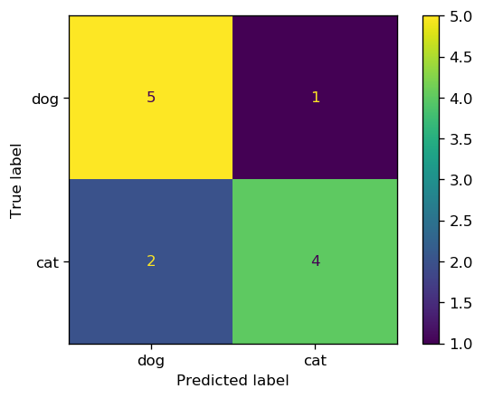
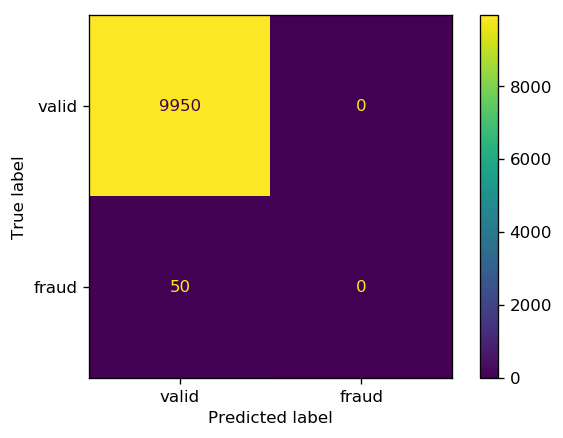
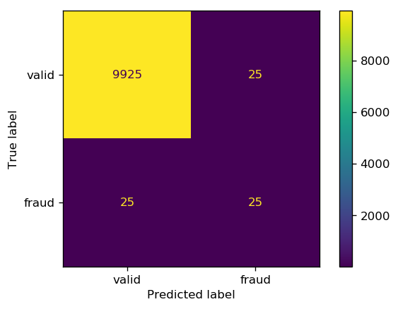

Classification Metrics (Part 1)
Introduction
Once we train a machine learning model for a classification task, we can evaluate the models' performance by comparing the class predictions of the model with the expected class labels. Failing to choose the right method to compare the two (prediction and expectation) can cause a poor model or produce misleading conslusions regarding the model performance and the model parameters. In this tutorial, we introduce commonly used and explain their pros and cons, and use cases.
Accuracy
Accuracy is the most common and natural way of assessing the performance of a model. It is simply defined as the ratio of the number correctly classified samples to the total number of observations
$$ \text{Accuracy}=\frac{\text{Number of Correct Predictions}}{\text{Number of Observations}} $$Let's consider a cat-dog binary classification problem where class label 1 corresponds to cats and dogs are labeled 0:
import numpy as np
# Observations
y_obs = np.array([1, 0, 0, 1, 0, 0, 1, 1, 0, 1, 1, 0])
Let's also assume that after training the classifier, the following predictions are obtained:
# Predictions
y_pred = np.array([1, 0, 1, 0, 0, 0, 1, 1, 0, 0, 1, 0])
Accuracy can then be calculated as follows
accuracy = sum(y_pred==y_obs) / len(y_obs)
print(f'{accuracy*100}%')
75%
9 out of the 12 predictions are True which gives the accuracy to be 75%.
Statistical measures of the performance
Even though accuracy is the most widely used metric in classification problems, using accuracy can sometimes produce misleading conclusions regarding the performance of the model. As we will see later, imbalanced classification problem is a well known case where using accuracy is prohibited.
Let's take a closer look at the cat-dog classification example by creating a table that groups the predicted classes for each class into correct and incorrect:
| Actual class | |||
|---|---|---|---|
| Cat | Dog | ||
|
Predicted
class |
Cat | 4 | 1 |
| Dog | 2 | 5 | |
The table above is usually represented as a matrix called Confusion Matrix.
from sklearn.metrics import confusion_matrix, ConfusionMatrixDisplay
cm = confusion_matrix(y_obs, y_pred)
cm
array([[5, 1],
[2, 4]])
cm_plot = ConfusionMatrixDisplay(confusion_matrix=cm, display_labels=['dog', 'cat'])
cm_plot.plot();

Before we proceed further, it is instructive to introduce some definitions that describe the performance of a classifier, specifically in binary classification.
True Positive, False Positive, False Negative, and True Negative
In cat-dog classification example, let's define the class label 1, cats, to be the positive and the class label 0, dogs, to be the negative class. The positivity or negativity of a class in this cat-dog classification is just a convention (either dog or cat can be defined as the positive class). However, in cases such as classifying fraudulent and valid transactions or classifying cancerous and benign tumors, the class with more importance to be recognized correctly is labeled as the positive class. In other words, misclassifying the positive class is much more unfavorable than misclassifying the negative class.
For example, classifying a cancerous tumor as benign is much worse than classifying a benign tumor as cancerous, therefore, cancerous tumor is the positive class. For the same reason, fradulent transaction is the positive class. Positive and negative are specially importance in imbalanced classification problems and rare event
We have four scenarios in binary classification:
- True positive (TP): the observed label is positive and the model predicts it to be positive.
- False positive (FP): the observed label is negative and the model Falsely predicts it to be positive.
- False negative (FN): the observed label is positive and the model Falsely predicts it to be negative.
- True negative (TN): the observed label is negative and the model predicts the label to be negative.
| Observed class | ||||
|---|---|---|---|---|
| Positive | Negative | |||
|
Predicted
class |
Positive | True Positive (TP) | False Positive (FP) | \[\hat{\text{N}}_{+}=\text{TP + FP}\] |
| Negative | False Negative (FN) | True Negative (TN) | \[\hat{\text{N}}_{-}=\text{FN + TN}\] | |
| \[\text{N}_{+}=\text{TP + FN}\] | \[\text{N}_{-}=\text{FP + TN}\] | |||
- $\text{N}_{+}$ is the total number of positive observations
- $\text{N}_{-}$ is the total number of negative observations
- $\hat{\text{N}}_{+}$ is the total number of positive predictions
- $\hat{\text{N}}_{-}$ is the total number of negative predictions
Note that $$ \text{N}=\text{N}_{+}+\text{N}_{-}=\hat{\text{N}}_{+}+\hat{\text{N}}_{-}=\text{TP + FP + FN + TN} $$ where $\text{N}$ is the total number of observations.
Using the terminolgy described in the previous section, we can now introduce different statistical measure of the performance in a binary classification task.
Precision
Precision or Positive predictive value (PPV) measures the proportion of positive predictions that were actually positive. $$ \text{Precision} = \frac{\text{TP}}{\hat{\text{N}}_{+}} = 1 - \frac{\text{FP}}{\hat{\text{N}}_{+}} $$
Recall
Recall, sensitivity, or true positive rate (TPR) measures the proportion of positive observations that were correctly predicted. It evaluates how good the model predicts the positive class. $$ \text{Recall} = \frac{\text{TP}}{\text{N}_{+}} = 1 - \frac{\text{FN}}{\text{N}_{+}} $$ Achieving a high recall is critical in the problems where correctly identifying the positive class is of vital importance, e.g. correctly identifying fradulent transactions or existence of a deadly disease.
Fall-out
Fall-out, false alaram rate, or false positive rate (FPR) is the ratio between the number of negative observation that falsely predicted to be positive (false positives) and the total number of negative observations. $$ \text{Fall-out} = \frac{\text{FP}}{\text{N}_{-}} = 1 - \frac{\text{FP}}{\text{N}_{-}} $$
Specificity
Specificity, Selectivity, or true negative rate (TNR) measures the proportion of negative observations that were correctly predicted. It evaluates how good the negative class was predicted. $$ \text{Specificity} = \frac{\text{TN}}{\text{N}_{-}} = 1 - \frac{\text{FP}}{\text{N}_{-}} $$
Imbalanced Classification
Imbalanced classification refers to the classification problems were the classes are disproportionately distributed in the population, i.e., one class (the majority class) has a significantly higher samples than the rest of the classes. In binary classification, the minority class is labeled as the positive class (labeled 1), and the majority class is denoted as the negative class (labeled 0). We have $$ \text{N}_{-} >> \text{N}_{+} $$
As we briefly pointed out in the beginning, accuracy is not an appropriate metric to evaluate the performance of a classifier for imbalanced problems. The issue with accuracy is that the classifier can achieve a very high accuracy by predicting all the outcomes to be negative regardless of the input sample. This is called a no-skill classifier.
Because there are only a small proportion of positive classes in the population, this will lead to a very high accuracy. Let's go through an example to get a better understanding of the issue and figure out how we can address it.
# Credit card dummy data
import numpy as np
def random_binary_array(k, n):
""" returns a random distribution of k 1s and n-k 0s"""
arr = np.zeros(n)
arr[:k] = 1
np.random.shuffle(arr)
return arr
# Create a dummy data of 10000 transaction outcomes (0:valid and 1:fraud)
# with 50 fraud transactions (50 1s and 9950 0s)
# Observations
y_obs = random_binary_array(25, 10000)
y_pred = random_binary_array(25, 10000)
# make sure we have some true negatives!
shared_true_negatives_indices = np.random.randint(0, 10000, 25)
y_pred[shared_true_negatives_indices] = 1
y_obs[shared_true_negatives_indices] = 1
# no-skill classifier - always predicts the majority class (0)
y_no_skill = np.zeros(10000)
print(f'no-skill classifier\'s accuracy is {sum(y_no_skill==y_obs)/len(y_obs)*100}%')
no-skill classifier's accuracy is 99.5%
As we can see, the no-skill classifier achieves a very high accuracy, however, not a single correct prediction for the positive class (fraud) observations.
fig, ax = plt.subplots(1, 1, dpi=150)
cm = confusion_matrix(y_obs, y_no_skill)
cm_plot = ConfusionMatrixDisplay(confusion_matrix=cm,
display_labels=['valid', 'fraud'])
cm_plot.plot(ax=ax);

The same holds true for the predictions; very high accuracy but half of the fraudulent transactions were misclassified as valid.

sklearn offers a useful function, classification_report, that summarizes some of the important classification metrics.
from sklearn.metrics import classification_report
print(classification_report(y_obs, y_pred, digits=3))
precision recall f1-score support
0.0 0.997 0.997 0.997 9950
1.0 0.500 0.500 0.500 50
accuracy 0.995 10000
macro avg 0.749 0.749 0.749 10000
weighted avg 0.995 0.995 0.995 10000
Note that unlike accuracy, precision and recall remain low ($50$%), denoting that the classifier has a poor performance when it comes to identifying the positive class. In classification metrics (2) we will continue this subject to get a better handle on the metrics that we can choose from in imbalanced classification problems.